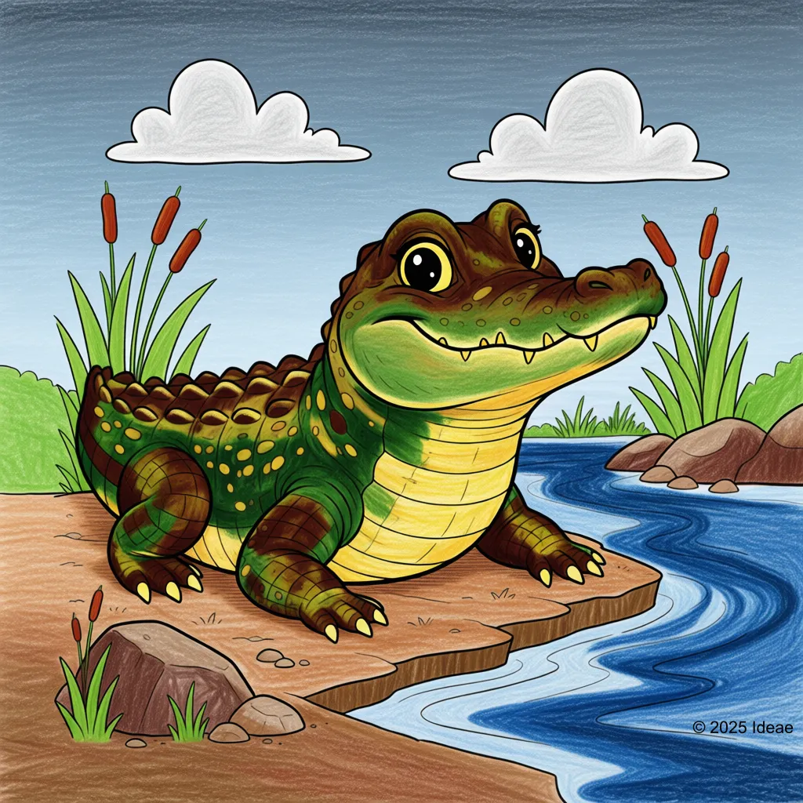

Crocodile
Nile Crocodile

Key Characteristics
- Crocodiles are powerful reptiles that have been around for millions of years, living dinosaurs!
- They have incredibly strong jaws and teeth, but the muscles that open their mouth are quite weak—a person can hold them shut with their hands!
- They are ambush hunters, meaning they hide underwater and wait for prey to come close to the water's edge.
Peculiar Facts (Fun Facts!)
- Crocodiles can hold their breath underwater for a very long time, sometimes over an hour!
- They swallow stones to help grind up their food in their stomachs and also to use as ballast (weights) for diving.
- Crocodiles are great parents; the mother will carry her babies gently in her mouth to protect them.